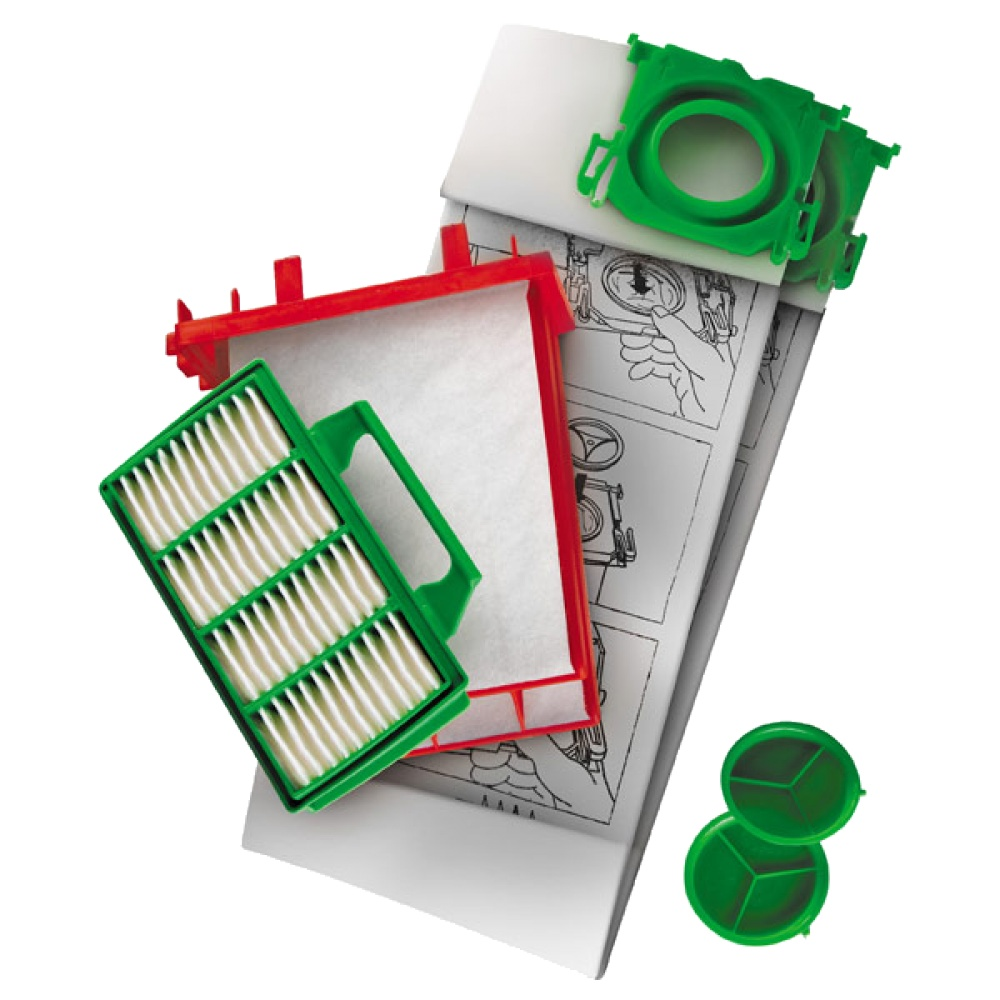

Bork V7B1 Набор пылесборников и фильтров для пылесосов
Сменные мешки - пылесборники BORK V 7B1 выполнены из синтетического волокна. В комплект входит 8 пылесборников и 2 фильтра. Мешки характеризуются надежной защитой от пыли, аллергенов и неприятных запахов.
Основные характеристики
Материал пылесборников: нетканый
Количество слоев: 4
Антиаллергенная обработка: да
Количество пылесборников в комплекте: 8
Количество фильтров в комплекте: 2 шт.
Цвет: белый
Дополнительная информация
Модель товара: V7B1
Гарантия: 1 год
Страна-производитель: Германия
Комплект состоит из 8 пылесборников со сроком службы 1,5 месяца каждый и подходит для пылесосов V700, V701, V702, V703,V705, V7011, V7012 и V7013. Модели ULTRA Bag являются дополнительным фильтром и при удалении из пылесоса герметично закрываются специальной крышкой. Такой пылесборник специально разработан для удобства людей, страдающих от аллергии и предъявляющих повышенные требования к гигиене.